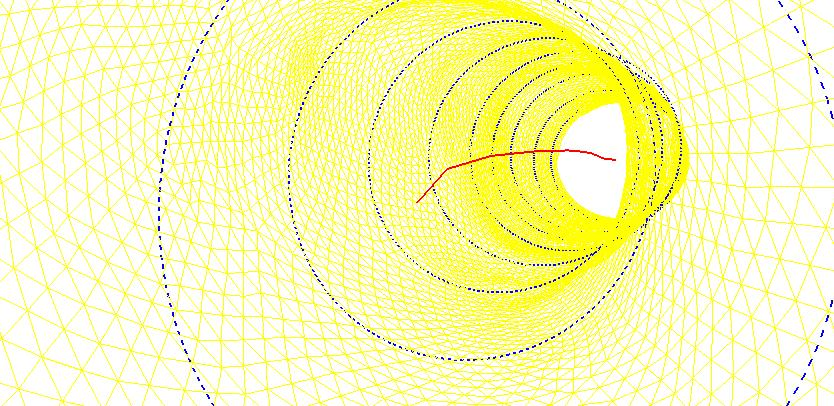
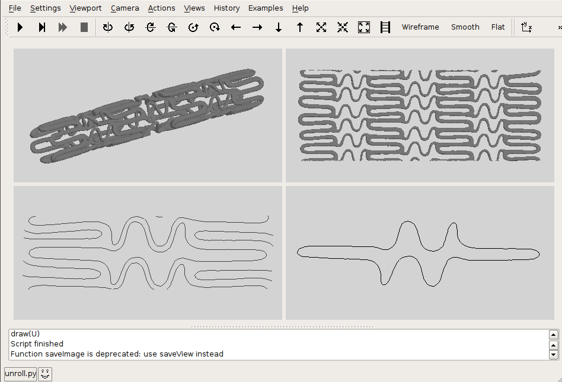

An artery with a kink was imported as a triangulated surface, obtained from medical CT scan images. The artery was approximated by a sequence of circles with varying diameters and non collinear center points. The figure below shows part of the triangulated surface (yellow), a subset of the approximating circles (blue) and the line connecting the centers of the circles (red). The view is taken from inside the artery.

Stent geometry evaluation
The next figure shows four stages in the evaluation of the geometry of a stent device. Upper left is the imported 3D surface, reconstructed from CT scan images. In pyFormex, the tubular stent is unrolled to a planar structure (upper right). This is cut with a plane, producing the circumference, from which the basic cell is taken shown in lower left. Finally, the lower right figure shows the resulting circumference of the opening between the stent material.

Want other examples ?
More examples are included in the pyFormex distribution
Last modified: Sun Jul 15 21:18:02 CEST 2007